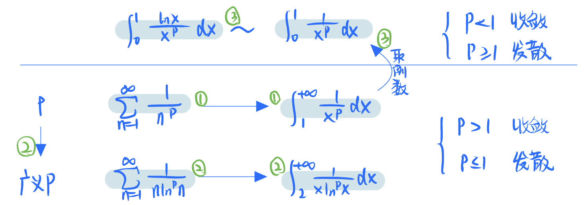

2022.06.29
遇到新题尝试下面思路 $$ S_n= u_1+u_2+...+u_n\ \lim_{x\to+\infty}S_n=A, & 收敛\ \lim_{x\to+\infty}S_n=\infty或不存在, & 发散 $$
性质1：线性 $$ \sum_{n=1}^{\infty}{au_n+bv_n} = \sum_{n=1}^{\infty}au_n+\sum_{n=1}^{\infty}bv_n $$
性质2：m项后余项与原级数同敛散性——改变有现项不改变敛散性
性质3：级数收敛，则通项趋于零
概念 $$ \sum_{n=1}^{\infty}u_n\u_n\ge0 $$
收敛原则 $$ \sum_{n=1}^{\infty}u_n收敛\to S_n有界\ S_n有界\to \sum_{n=1}^{\infty}u_n收敛 $$
比较判别法
小发则大发，大收则小收
可以结合常用不等式
比较判别法的极限形式 $$ \lim_{x\to\infty}\frac{u_{n}}{v_n}= \begin{cases} 0&,按比较判别法\ \infty&,按比较判别法\ A\in(0,\infty)&,u_n,v_n同敛散 \end{cases} $$
比值判别法（达朗贝尔判别法） $$ \lim_{x\to\infty}\frac{u_{n+1}}{u_n}=\rho\ \begin{cases} 收敛&,\rho<1\ 发散&,\rho>1\ 失效&,\rho=1 \end{cases} $$
根值判别法（柯西判别法） $$ \lim_{x\to\infty}\sqrt[n]{u_n}=\rho\ \begin{cases} 收敛&,\rho<1\ 发散&,\rho>1\ 失效&,\rho=1 \end{cases} $$
积分判别法 $$ u_n非负单减，\sum_{n=1}^{+\infty}u_n与\int_1^{+\infty}f(x)dx同敛散 $$
定义：$\sum_{x=1}^{+\infty}(-1)^nu_n$，注意$u_n>0$，不等于零
莱布尼兹判别法 $$ \begin{cases} u_n单调递减\ \lim_{n\to+\infty}u_n=0 \end{cases} \to收敛 $$
一些常用反例 $$ u_n = (-1)^n \frac{1}{\sqrt n}\ u_n = \frac{1}{\sqrt n}\ u_n = (-1)^n \frac{1}{n}\ u_n = \frac{1}{n} $$
常用结论
p级数 $$ \sum_{n=1}^{\infty}\frac{1}{x^p} \begin{cases} 收敛&,p>1\ 发散&,p≤1 \end{cases} $$
广义p级数 $$ \sum_{n=2}^{\infty}\frac{1}{x\ln^px} \begin{cases} 收敛&,p>1\ 发散&,p≤1 \end{cases} $$
- p=1的时候都是发散的
- Pxx与广义Pxx条件是敛散性一样的。所以才叫广义。
- P积分的(0-1)与(1,+∞)积分实际上可以认为是x取倒数。
- $\int_1^{+\infty}\frac{1}{x^p}$与$\int_1^{+\infty}\frac{\ln x}{x^p}$结果一样。

$$ \sum_{n=1}^\infty u_n收敛 \nrightarrow \sum_{n=1}^\infty |u_n|收敛\ eg. \sum_{n=1}^\infty(-1)^n\frac{1}{n}收敛，\sum_{n=1}^\infty\frac{1}{n}发散 $$
$$ \sum_{n=1}^\infty u_n收敛\to \sum_{n=1}^\infty u_{n}^2 \begin{cases} 收敛&,u_n≥0\ 不确定&,u_n为任意项\ \end{cases}\ eg. \sum_{n=1}^\infty(-1)^n\frac{1}{\sqrt n}收敛，\sum_{n=1}^\infty\frac{1}{n}发散 $$
$$ \sum_{n=1}^\infty u_n收敛\to \sum_{n=1}^\infty u_{n}\cdot u_{n+1} \begin{cases} 收敛&,u_n≥0,(1)\ 不确定&,u_n为任意项,(2)\ \end{cases}\
prove(1). u_n\cdot u_{n+1}≤\frac{1}{2}(u_n^2+u_{n+1}^2)\ eg(2). \sum_{n=1}^\infty(-1)^n\frac{1}{\sqrt n}收敛，\sum_{n=1}^\infty\frac{1}{\sqrt {n(n+1)}}发散 $$
$$ \sum_{n=1}^\infty u_n收敛 \nrightarrow \sum_{n=1}^\infty (-1)^nu_n收敛\ eg. \sum_{n=1}^\infty(-1)^n\frac{1}{n}收敛，\sum_{n=1}^\infty\frac{1}{n}发散 $$
$$ \sum_{n=1}^\infty u_n收敛 \nrightarrow\sum_{n=1}^\infty (-1)^n \frac{u_{n}} {n}收敛\ eg. \sum_{n=1}^\infty(-1)^n\frac{1}{\ln n}收敛，\sum_{n=2}^\infty\frac{1}{n\ln n}发散 $$
$$ \sum_{n=1}^\infty u_n收敛\to \sum_{n=1}^\infty u_{2n}与\sum_{n=1}^\infty u_{2n+1} \begin{cases} 收敛&,u_n≥0\ 不确定&,u_n为任意项\ \end{cases}\
eg. \sum_{n=1}^\infty(-1)^n\frac{1}{n}收敛，\sum_{n=1}^\infty\frac{1}{2n}发散 $$
$$ \sum_{n=1}^\infty u_n收敛\to \sum_{n=1}^\infty (u_{2n}+u_{2n-1})收敛\ \sum_{n=1}^\infty (u_{2n}+u_{2n-1})收敛,则\sum_{n=1}^\infty u_n收敛,错！还需要\lim_{n\to \infty}u_n=0\ eg. u_{2n}=1, u_{2n-1}=-1, \sum_{n=1}^\infty (u_{2n}+u_{2n-1})=0, \sum_{n=1}^\infty u_n发散 $$
$$ \sum_{n=1}^\infty u_n收敛,\sum_{n=1}^\infty (u_{2n}-u_{2n-1})不确定\ eg. \sum_{n=1}^\infty(-1)^n\frac{1}{n}收敛，\sum_{n=1}^\infty (u_{2n}-u_{2n-1})=\sum_{n=1}^\infty\frac{1}{n}发散 $$
$$ \sum_{n=1}^\infty u_n收敛\to \begin{cases} \sum_{n=1}^\infty (u_{n}+u_{n+1})收敛,\sum_{n=1}^\infty u_{n}+\sum_{n=1}^\infty u_{n+1}收敛\
\sum_{n=1}^\infty (u_{n}-u_{n+1})收敛,\sum_{n=1}^\infty u_{n}-\sum_{n=1}^\infty u_{n+1}发散 \end{cases} $$
$$ \sum_{n=1}^\infty |u_n|收敛,则\sum_{n=1}^\infty u_{n}收敛\ \sum_{n=1}^\infty u_n发散,则\sum_{n=1}^\infty |u_{n}|收敛 $$
$$ \sum_{n=1}^\infty u_n^2收敛,则\sum_{n=1}^\infty \frac{u_n}{n}绝对收敛\ 因为|\frac{u_n}{n}|≤\frac{1}{2}(u_n^2+\frac{1}{n^2}) $$
$$ a,b,c≠0\ au_n+bv_n+cw_n=0\ 则在\sum_{n=1}^\infty u_n,\sum_{n=1}^\infty v_n,\sum_{n=1}^\infty w_n中只有有两个收敛，另一个必收敛 $$
$$ \sum_{n=1}^\infty u_n,\sum_{n=1}^\infty v_n都收敛，则\sum_{n=1}^\infty u_n\pm v_n收敛 $$
$$ \sum_{n=1}^\infty u_n收敛, \sum_{n=1}^\infty v_n发散，则\sum_{n=1}^\infty u_n\pm v_n发散 $$
$$ \sum_{n=1}^\infty u_n,\sum_{n=1}^\infty v_n都发散，则\sum_{n=1}^\infty u_n+ v_n发散(u_n≥0, v_n≥0)\ \sum_{n=1}^\infty u_n,\sum_{n=1}^\infty v_n都发散，则\sum_{n=1}^\infty u_n\pm v_n不确定(u_n, v_n任意) $$
$$ \sum_{n=1}^\infty u_n,\sum_{n=1}^\infty v_n都收敛，
\begin{cases} (1)\sum_{n=1}^\infty u_n\cdot v_n收敛 &,u_n≥0, v_n≥0\ (2)\sum_{n=1}^\infty |u_n|\cdot v_n收敛&, u_n任意, v_n≥0\ (3)\sum_{n=1}^\infty u_n\cdot v_n不确定&, u_n, v_n不确定\ \end{cases}\
prove(1):(u_n\cdot v_n≤\frac{u_n^2+v_n^2}{2})\ $$
函数项级数 $$ \sum_{n=1}^{\infty}u_n(x) $$
幂级数 $$ \sum_{n=1}^{\infty}a_n(x-x_0)^n\ \sum_{n=1}^{\infty}a_nx^n $$
阿贝尔定理 $$ \lim|\frac{a_{n+1}}{a_n}| = \rho\ R= \begin{cases} \frac{1}{\rho}&,\rho≠0\ 0&,\rho=\infty\ \infty&,\rho=0 \end{cases}\ 注意端点要单独确认 $$
收敛域求法（具体型） $$ \lim|\frac{a_{n+1}}{a_n}| <1\ 收敛区间为x范围\ 注意端点要单独确认，得到收敛域 $$
抽象型，对于$\sum_{n=0}^{\infty}a_n(x-x_0)^n$ $$ 若x=b时条件收敛\to R=|b-x_0|\ (x-x_0)^n到(x-x_1)^n的变换不改变收敛域,包括乘(x-x_0)^k与平移\ 对级数逐项求导，收敛半径不变，收敛域可能缩小\ 对级数逐项积分，收敛半径不变，收敛域可能扩大\ $$
如何改造通项与下标 $$ \sum_{n=1}^{\infty}a_nx^n = \sum_{n=0}^{\infty}a_{n+1}x^{n+1}\ \sum_{n=1}^{\infty}a_nx^n = x\cdot \sum_{n=1}^{\infty}a_nx^{n-1}\ \sum_{n=0}^{\infty}a_nx^n = a_0 + \sum_{n=1}^{\infty}a_nx^n $$
先导后积 $$ S(x) = S(x_0)+\int_{x_0}^x(\sum_{n=1}^{\infty}a_nt^n)'dt $$
先积后导 $$ S(x) = (\int \sum_{n=1}^{\infty}a_nt^n dt)' $$
常用结论 $$ \sum_{n=1}^{\infty}\frac{x^n}{n} = -\ln(1-x),x\in[-1,1)\ \sum_{n=1}^{\infty}nx^{n-1} = \frac{1}{(1-x)^2},x\in(-1,1) $$
常用的展开式(注意收敛域) $$ e^x = \sum_{x=0}^\infty \frac{x^n}{n!} &,x\in(-\infty,+\infty)\ \frac{1}{1-x} = \sum_{x=0}^\infty x^n &,x\in(-\infty,+\infty)\ \frac{1}{1+x} = \sum_{x=0}^\infty (-x)^n &,x\in(-\infty,+\infty)\ \ln(1+x) = \sum_{x=1}^\infty (-1)^{n-1}\frac{x^{n}}{n}&,x\in[-1,1)\ \sin x = \sum_{x=0}^\infty (-1)^n\frac{x^{2n+1}}{(2n+1)!} &,x\in(-\infty,+\infty)\ \cos x = \sum_{x=0}^\infty (-1)^n\frac{x^{2n}}{(2n)!} &,x\in(-\infty,+\infty)\ (1+x)^a = 1+ax+\frac{a(a-1)}{2!}x^2+\cdots+\frac{a(a-1)..(a-n+1)}{n!}x^n+\cdots&, \begin{cases} x\in(-1,1),a≤1\ x\in(-1,1],a\in(-1,0)\ x\in[-1,1],a>0,a\notin N^\ x\in R,a\in N^ \end{cases} $$
函数展开 $$ f(x) = \sum_{n=0}^{\infty} \frac{f^{(n)}(x_0)}{n!}(x-x_0)^n\ f(x) = \sum_{n=0}^{\infty} \frac{f^{(n)}(0)}{n!}x^n $$
$$ \ln(n-1)=\sum_{n=1}^\infty\frac{x^{n}}{n},-1<x≤1\ \ln(n+1)=\sum_{n=1}^\infty(-1)^{n-1}\frac{x^{n}}{n},-1<x≤1\ $$
$$ \frac{1}{2}\ln(n+1)=\sum_{n=1}^\infty(-1)^{n-1}\frac{x^{n}}{2n},-1<x≤1 $$
$$ \arctan x=\sum_{n=1}^\infty(-1)^{n-1}\frac{x^{2n+1}}{2n+1},-1≤x≤1 $$
$$ e^x = \sum_{n=1}^\infty\frac{x^{n}}{n!},-\infty<x≤\infty\ -e^x = \sum_{n=1}^\infty(-1)^{n}\frac{x^{n}}{n!},-\infty<x≤\infty\ \frac{e^x+e^{-x}}{2} = \sum_{n=1}^\infty\frac{x^{2n}}{(2n)!},-\infty<x≤\infty\ \frac{e^x-e^{-x}}{2} = \sum_{n=1}^\infty\frac{x^{2n+1}}{(2n+1)!},-\infty<x≤\infty\ \cos x=\sum_{n=1}^\infty(-1)^{n}\frac{x^{2n}}{(2n)!},-\infty<x≤\infty\ \sin x=\sum_{n=1}^\infty(-1)^{n}\frac{x^{2n+1}}{(2n+1)!},-\infty<x≤\infty $$
$$ \frac{x}{(1-x)^2}=\sum_{n=1}^\infty nx^n,-1<x<1\ -\ln(1-x)=\sum_{n=1}^\infty\frac{x^n}{n},-1≤x<1 $$
$$ \ln(n-1)=\sum_{n=1}^\infty\frac{x^{n}}{n},-1<x≤1\ \ln(n+1)=\sum_{n=1}^\infty(-1)^{n-1}\frac{x^{n}}{n},-1<x≤1\ $$
$$ \frac{1}{2}\ln(n+1)=\sum_{n=1}^\infty(-1)^{n-1}\frac{x^{n}}{2n},-1<x≤1 $$
$$ \arctan x=\sum_{n=1}^\infty(-1)^{n-1}\frac{x^{2n+1}}{2n+1},-1≤x≤1 $$
$$ e^x = \sum_{n=1}^\infty\frac{x^{n}}{n!},-\infty<x≤\infty\ -e^x = \sum_{n=1}^\infty(-1)^{n}\frac{x^{n}}{n!},-\infty<x≤\infty\ \frac{e^x+e^{-x}}{2} = \sum_{n=1}^\infty\frac{x^{2n}}{(2n)!},-\infty<x≤\infty\ \frac{e^x-e^{-x}}{2} = \sum_{n=1}^\infty\frac{x^{2n+1}}{(2n+1)!},-\infty<x≤\infty\ \cos x=\sum_{n=1}^\infty(-1)^{n}\frac{x^{2n}}{(2n)!},-\infty<x≤\infty\ \sin x=\sum_{n=1}^\infty(-1)^{n}\frac{x^{2n+1}}{(2n+1)!},-\infty<x≤\infty $$
$$ \frac{x}{(1-x)^2}=\sum_{n=1}^\infty nx^n,-1<x<1\ -\ln(1-x)=\sum_{n=1}^\infty\frac{x^n}{n},-1≤x<1 $$